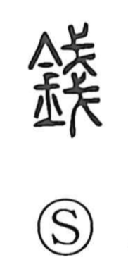

錢

Uncategorized
Kun: zeni, suki | On: sen
money ・ coin ・ hoe ・ plow
Explanation
This character is a phono-semantic compound: the metal radical signals something made of metal, while the phonetic element 戔 provides the sound sen and originally depicted long, narrow halberds stacked in a flat pile, suggesting thin things heaped up. Early sources show that the word first named a field implement—hoe or plow—and the Book of Odes celebrates sacred field work with a line that pairs tools as 錢縛, “hoe and plow.” Only later did the graph come to denote copper coinage, zeni; in early times, such currency even took the form of small knife-shaped pieces, known as 刀幣, 刀布, and 刀貨. Thus the graph moved from the world of agricultural tools into the sphere of metal money, while retaining its phonetic value and metal radical.